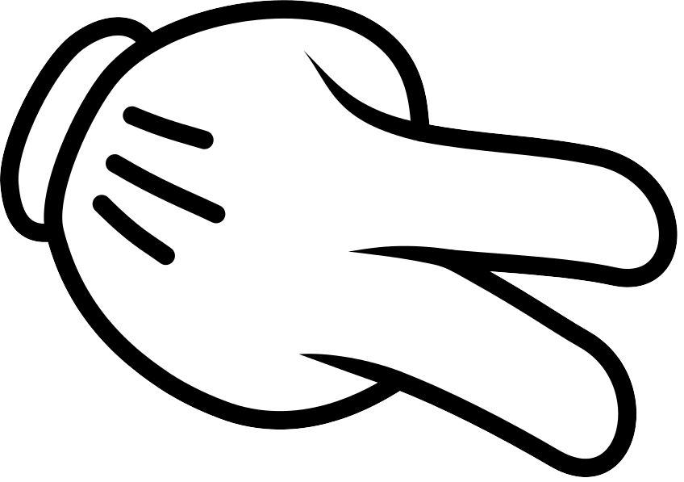
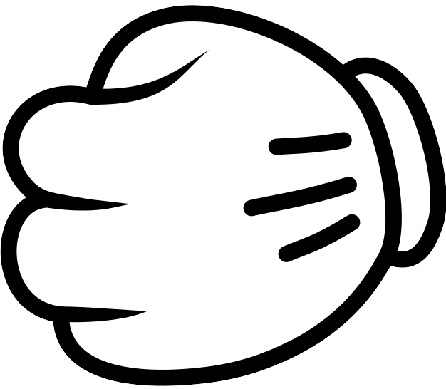
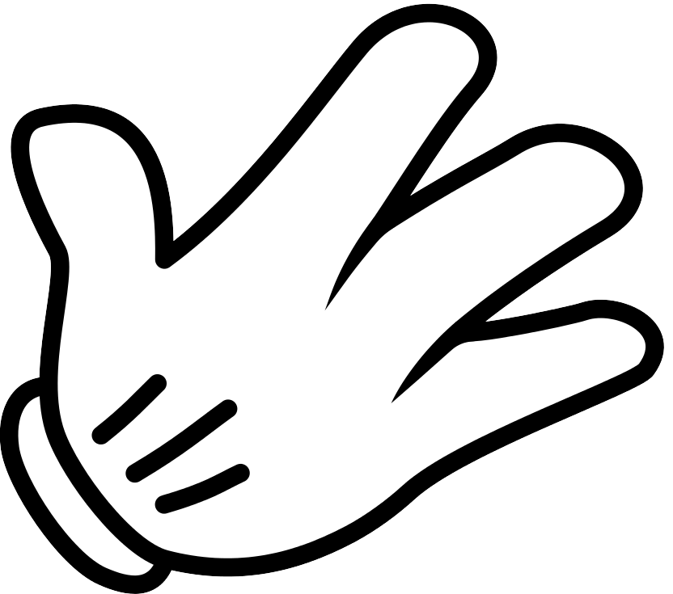

// Rock_scissors_paper.html

<!DOCTYPE html>
<html lang="en">

<head>
    <meta charset="UTF-8">
    <meta name="viewport" content="width=device-width, initial-scale=1.0">
    <link rel="stylesheet" href="../CSS/style.css">
    <link rel="preconnect" href="https://fonts.googleapis.com">
    <link rel="preconnect" href="https://fonts.gstatic.com" crossorigin>
    <link href="https://fonts.googleapis.com/css2?family=Jua&family=Oswald:wght@200..700&display=swap" rel="stylesheet">
    <link
        href="https://fonts.googleapis.com/css2?family=Jua&family=Noto+Sans+KR:wght@100..900&family=Oswald:wght@200..700&display=swap"
        rel="stylesheet">
    <title>가위, 바위, 보</title>


</head>

<body>
    <!-- TODO:  2. 게임시작 누르면 가위바위보, 3승 시 승리하도록 수정
                3. 승리, 패배 확인 팝업 및 모달 -->
    <div id="container">
        <h1>가위바위보 게임</h1>
            <button type="button" id="start-game">게임 시작</button>
            <div class="game-screen">
                <div class="choices">
                    <button data-choice="scissors">가위</button>
                    <button data-choice="rock">바위</button>
                    <button data-choice="paper">보</button>
                </div>
                <div class="result">
                    <p id="user-choice">나: </p>
                    <p id="computer-choice">컴퓨터 선택: </p>
                    <p id="game-result">결과: </p>
                </div>
                <button id="restart-game">재시작</button>
            </div>
        </div>
    </div>
    <script src="game-logic.js"></script>
    <script src="game-result.js"></script>
    <script src="../JS/game-start.js"></script>
</body>

</html>